Differential methylation
Count models, smoothing, DMLs and DMRs
Epigenetics
About this lecture
Bisulfite and enzymatic sequencing turned reads into a table of methylated and total reads per CpG. This lecture compares such tables between groups of samples.
- The data: two count matrices, methylated reads and all reads, CpGs × samples.
- The models: binomial sampling and beta-binomial biological variation, the analogue of Poisson and negative binomial in RNA-seq.
- Smoothing: borrowing strength from neighbouring CpGs.
- DMLs and DMRs: single CpGs vs regions; multiple testing; effect sizes in Δβ.
- Real data: ENCODE GM12878 vs K562, two replicates each, chr21, with DSS; annotation and expression.
- Design: what replicates of a cell line can and cannot tell you.
The data: methylated reads out of all reads
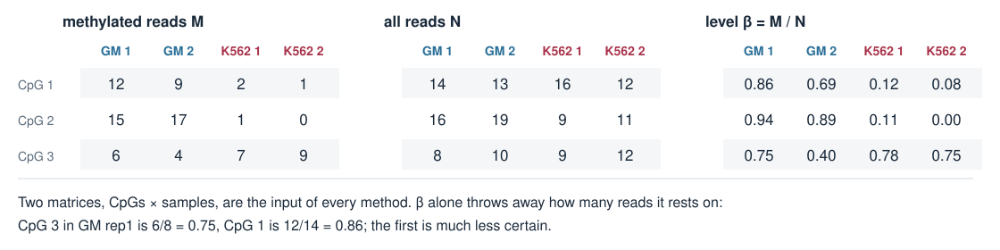
- For every CpG and sample: M methylated reads and N reads in total (both strands combined).
- β = M/N is the level, but its precision depends on N: 6/8 and 60/80 are both 0.75.
- No library-size normalisation is needed: each CpG is its own denominator.
Two sources of variation
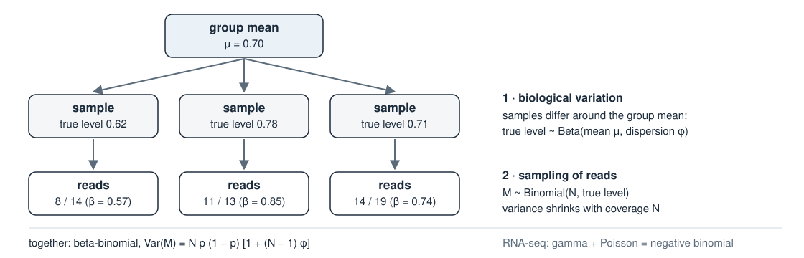
- Biological: each sample has its own true level around the group mean (cell mix, individual, culture history).
- Sampling: given the true level, reads are a binomial draw; this noise shrinks as N grows, the biological part does not.
- The beta-binomial combines them, with an overdispersion parameter φ per CpG.
Binomial and beta-binomial
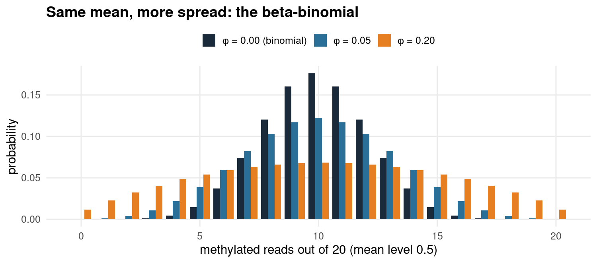
- With 20 reads and a mean level of 0.5: the binomial gives SD 2.2 reads (β ± 0.11).
- With φ = 0.2 the SD is 4.9 reads (β ± 0.24): the same mean, more than twice the spread, and 0 or 20 of 20 is no longer rare.
Real replicates are overdispersed
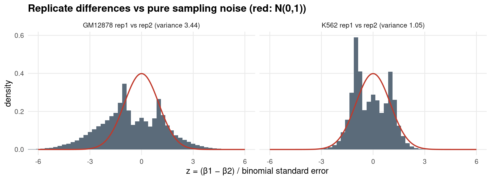
- Compare the two replicates of each cell line, CpG by CpG, scaled by the binomial standard error. Pure sampling noise would give a variance of 1.
- K562: 1.05, close to binomial. GM12878: 3.44: the two cultures really differ.
- The spiky shape comes from small integer counts (10–20 reads).
Replicates in 100-kb bins
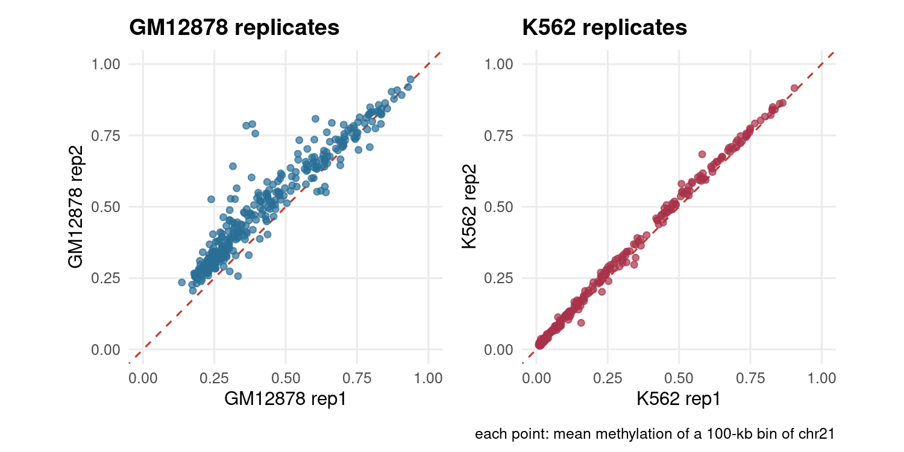
- K562 replicates agree almost perfectly (r = 0.999). GM12878 rep2 is 0.067 higher on average than rep1, most in partially methylated domains.
- A global shift between replicates is real variation between cultures, not noise. In human samples it can come from age, cell composition or proliferation.
Testing one CpG
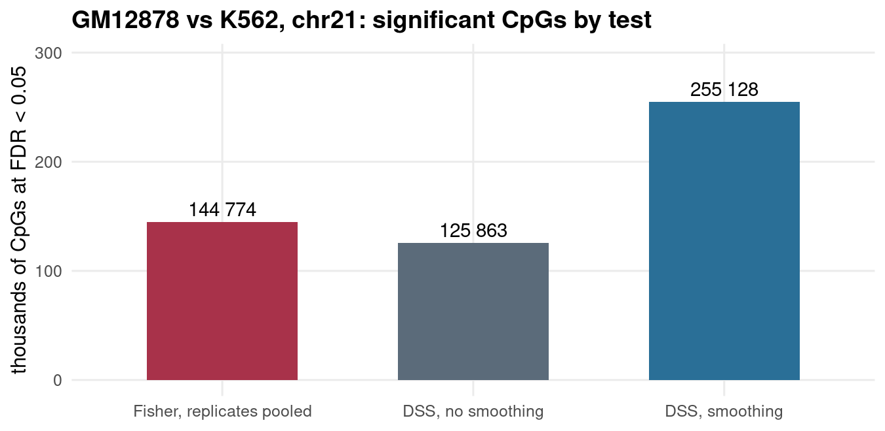
- Fisher’s exact test on pooled reads treats reads as independent: between the two GM12878 replicates, where there is no group difference, it calls 20 902 CpGs at FDR < 0.05.
- DSS fits a beta-binomial per CpG, shrinks φ towards a common prior (empirical Bayes, as DESeq2 does), and uses a Wald test.
- Smoothing (next slide) adds information from neighbours and raises the number of significant CpGs.
Neighbouring CpGs are correlated: smoothing
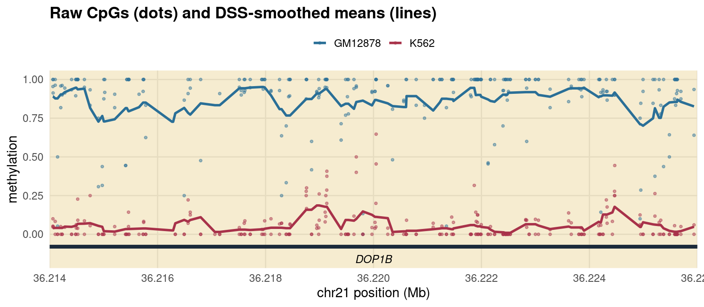
- Methylation changes over hundreds of bp, but each CpG has only 10–20 reads. Averaging neighbours trades resolution for precision.
- BSmooth fits a local likelihood smoother per sample; DSS smooths with a moving average (default window 500 bp) before testing.
- Smoothing assumes neighbours share a level: it blurs sharp boundaries and single-CpG events (e.g. at a TF site).
DSS in a few lines
library(DSS)
dat <- lapply(files, fread) # each: chr, pos, N, X (X = methylated reads)
bs <- makeBSseqData(dat, c("gm1", "gm2", "k1", "k2"))
dml <- DMLtest(bs, group1 = c("gm1", "gm2"), group2 = c("k1", "k2"), smoothing = TRUE)
dmls <- callDML(dml, delta = 0.2, p.threshold = 1e-5) # single CpGs
dmrs <- callDMR(dml, delta = 0.2, p.threshold = 1e-5) # regions
DMLfit.multiFactor(bs, design = df, formula = ~ group + sex) # general designsdelta: test |Δβ| > delta rather than Δβ ≠ 0 (an effect-size threshold built into the test).- Run time for chr21 (366 640 CpGs, 4 samples): under 1 minute.
Single CpGs: the volcano
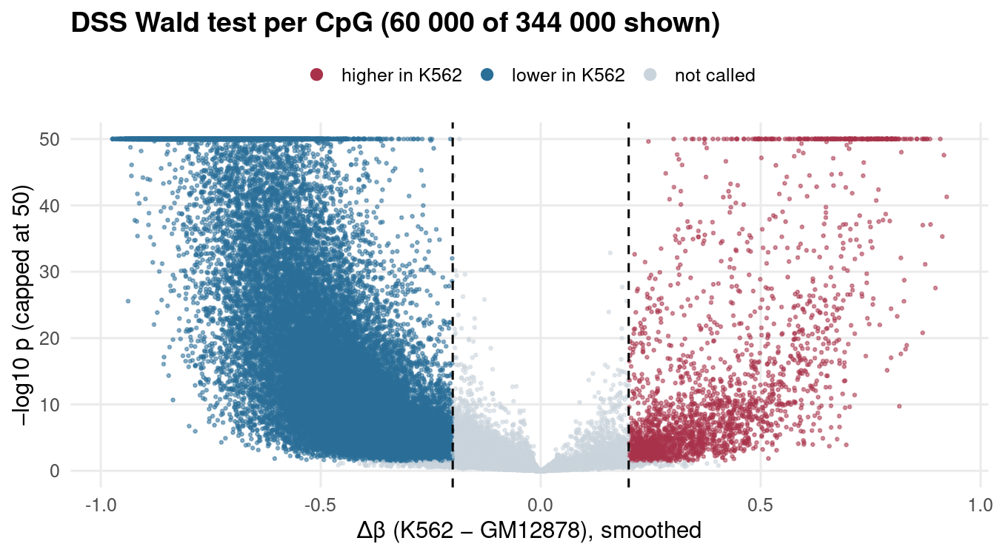
- 87 108 differential CpGs (|Δβ| > 0.2, p < 10⁻⁵); 82 788 (95%) are lower in K562.
- The asymmetry is biology: K562 lost methylation in large domains; gains are few and focal.
From CpGs to regions
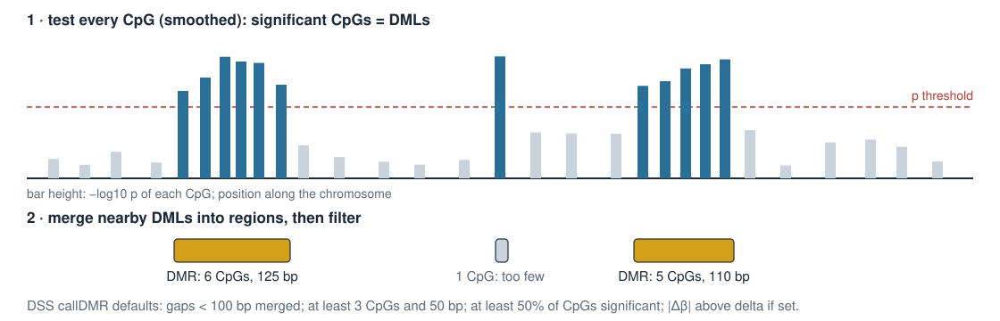
- A DMR is a run of nearby differential CpGs: fewer, more interpretable units than single CpGs, closer to the scale of regulatory elements.
- Each tool has its own rules (gap, minimum CpGs, minimum length, fraction significant) and the results depend on them.
DMRs between GM12878 and K562

- 5 061 DMRs on chr21: 4 803 lower in K562 (3.3 Mb in total) and 258 higher.
- 68% of the losses lie in K562’s hypomethylated domains (46% of tested CpGs do). Gains are enriched at CpG islands (9.7% vs 7.1% of CpGs) and promoters (6.6% vs 4.9%).
Multiple testing: CpGs vs regions
- Whole genome: ~28 million CpGs. At p < 0.001 you expect ~28 000 false positives: control the FDR (Benjamini–Hochberg), as in RNA-seq.
- But an FDR over CpGs is not an FDR over regions: one false region can contain 10 false CpGs, and regions are defined after looking at the data.
- dmrseq defines candidate regions, scores each as a unit, and gets region-level p-values by permuting sample labels: valid FDR for DMRs, but it needs enough samples to permute.
A promoter DMR
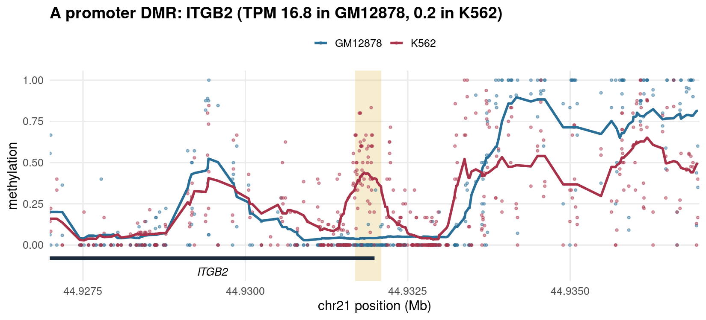
- ITGB2 (integrin β2, CD18, a leukocyte gene): CpG-island promoter at 0.04 in GM12878 and 0.40 in K562 (DMR of 399 bp).
- Expression: 16.8 TPM in GM12878, 0.2 in K562. Gain of promoter methylation, loss of expression.
Do promoter DMRs change expression?
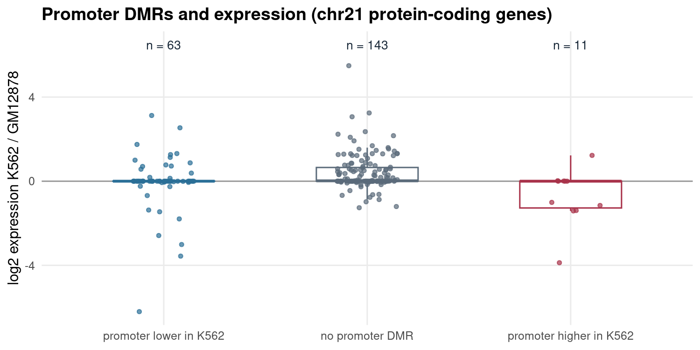
- Promoters higher in K562: 5 of 11 genes are down more than 2-fold in K562, 1 up.
- Promoters lower in K562: 7 up, 7 down of 63: no consistent direction (many are silent genes in domains that lost methylation).
- Expression is weakly linked to promoter methylation genome-wide; strongly at CGI promoters that become methylated.
Design: what are the replicates?
- Cell-line replicates (our data) measure technical and culture variation. The p-values say “these two cultures differ”, not “B cells differ from erythroleukaemia”.
- In human samples, differences can come from cell-type composition, age, sex, genotype (SNPs, meQTLs), smoking, batch and conversion efficiency. Put them in the model or in the design.
- Methylation differences between cell types are large (Δβ 0.3–1); between exposed and unexposed people often small (Δβ 0.01–0.05): they need many samples, which is why population studies use arrays.
Tools
| tool | model | regions | notes |
|---|---|---|---|
| DSS | beta-binomial, shrunken dispersion, Wald test; smoothing | callDMR merges DMLs | fast; multi-factor designs |
| BSmooth (bsseq) | local-likelihood smoothing, t-statistics | runs of large t; blocks | low coverage OK; needs ≥ 2–3 per group |
| dmrseq | beta-binomial GLM on candidate regions | permutation FDR for regions | needs more samples |
| methylKit | logistic regression (+ overdispersion) | tiles or merged CpGs | popular for RRBS |
| metilene | segmentation, no model per CpG | yes | very fast, few assumptions |
| limma on M-values | linear model | DMRcate, bumphunter | arrays (Methylation arrays) |
Summary
| idea | key fact |
|---|---|
| data | methylated and total reads per CpG and sample; no library-size normalisation |
| model | binomial sampling + beta biological variation = beta-binomial; Var = Np(1−p)[1+(N−1)φ] |
| replicates | K562 replicates ~binomial (z variance 1.05); GM12878 overdispersed (3.44) |
| pooling | Fisher on pooled reads calls 20 902 false CpGs between two GM12878 replicates |
| smoothing | borrows neighbours (BSmooth, DSS); blurs sharp single-CpG changes |
| DML vs DMR | CpG tests, then merging rules; region FDR needs region-level methods (dmrseq) |
| effect size | report Δβ; use a delta threshold |
| this dataset | 5 061 DMRs; 95% lower in K562, mostly in hypomethylated domains; gains at CGIs |
| design | cell lines ≠ populations; composition, age, sex, genotype, batch confound |
Key papers (optional further reading)
Not required reading and not examined. For those who want the primary literature.
- Hansen, Langmead & Irizarry 2012, Genome Biol. BSmooth: from whole genome bisulfite sequencing reads to differentially methylated regions. Smoothing; low coverage, many samples.
- Feng, Conneely & Wu 2014, Nucleic Acids Res. A Bayesian hierarchical model to detect differentially methylated loci from single nucleotide resolution sequencing data. DSS: beta-binomial with shrunken dispersion.
- Akalin et al. 2012, Genome Biol. methylKit: a comprehensive R package for the analysis of genome-wide DNA methylation profiles. A widely used alternative, especially for RRBS.
- Korthauer et al. 2019, Biostatistics. Detection and accurate false discovery rate control of differentially methylated regions from whole genome bisulfite sequencing. dmrseq: region-level FDR.
- Hansen et al. 2011, Nat Genet. Increased methylation variation in epigenetic domains across cancer types. Large hypomethylated blocks in cancer.
- Ziller et al. 2015, Nat Methods. Coverage recommendations for methylation analysis by whole-genome bisulfite sequencing. Replicates vs depth.